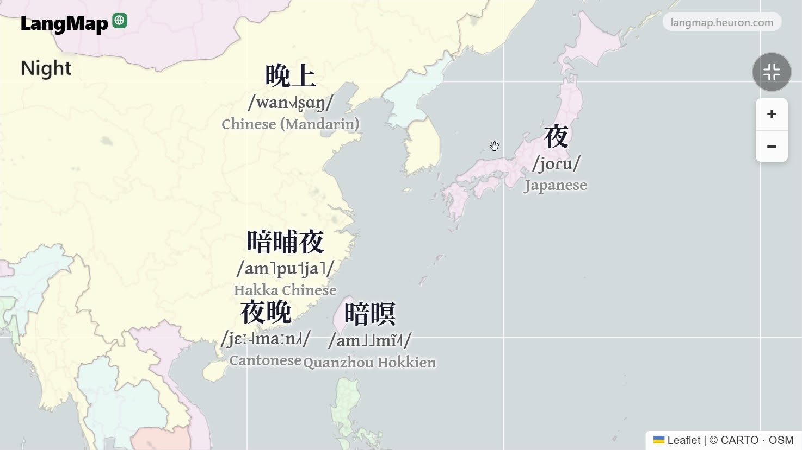

Sinosphere · · revised · Facebook post
One Night, Four Compounds
- Mandarin 晚上, Cantonese 夜晚, Hokkien 暗暝 and Hakka 暗晡夜 all mean "night".
- The characters 夜, 晚, 暗, 暝 and 晡 are shared across the region, yet each language combined them differently.
- Indo-European did the opposite and kept one word, from Latin nox to English night.

Contents
Four words for one night
One dark half of one day, and the Sinosphere has four different compounds for it.
Mandarin: 晚上 (wǎnshang)
Cantonese: 夜晚 (je6 maan5)
Hokkien: 暗暝 (àm-mî)
Hakka: 暗晡夜 (am-pû-ya)
All four are written in Chinese characters.
All four mean "night".
And no two of them are the same word.
The same characters, rearranged
The pieces themselves are shared property across the whole region:
夜 = night
晚 = evening, late
暗 = dark
暝 = dusk, darkness
晡 = late afternoon
Every one of these characters can be read in Mandarin, Cantonese, Hokkien or Hakka.
But each language picked its own combination.
Mandarin took 晚, "evening", and added 上, the same time suffix it uses in 早上 (zǎoshang), "morning".
Cantonese put 夜 first: "night" plus "evening".
Hokkien built night out of darkness: 暗, "dark", plus 暝, the Min word for night.
Hakka stacked three characters: 暗, "dark", 晡, "late afternoon", and 夜, "night".
Other varieties chose yet another way:
Shanghainese, Gan and Xiang: 夜里
Teochew: 暝旰
Fuzhou: 暝
Shared script, separate words
This is something the Sinosphere shows again and again.
The script was shared. The words were not.
A reader of Chinese characters can look at 暗暝 or 暗晡夜 and guess the meaning from the characters: something dark, something late.
But a Mandarin speaker would never say them.
And it shows up most clearly in the most ordinary vocabulary, words like "night".
Literary words travelled with the books, so they tend to agree.
Everyday words stayed at home, so they tend to differ.
Go further back and the compounds disappear. For Old Chinese and Middle Chinese, the Word Map gives a single character, plain 夜, the same character Japanese still uses on its own:
Japanese: 夜 (yoru)
Except that Japanese yoru is a native Japanese word written with a Chinese character. Korean 밤 (bam) and Vietnamese đêm are native words too.
Indo-European went the other way
Now compare Europe.
Proto-Indo-European is reconstructed with *nókʷts, "night", and it survives almost intact:
Latin: nox
Greek: νύξ (nýx)
Russian: ночь (noch')
Lithuanian: naktis
Gothic: nahts
German: Nacht
English: night
These languages share no script. Latin, Greek, Cyrillic and Gothic letters all look different.
But they kept the same word.
Not every branch held on. Hindi says रात (rāt), from Sanskrit rātri, even though Sanskrit also had नक्तम् (naktam), "by night", from the old root.
Still, from Lisbon to Moscow, most languages say some form of the same old word, while within China "night" has at least four.
One night
Go back to the four compounds.
晚上, 夜晚, 暗暝, 暗晡夜
One family of languages shared a single script and built different words from it.
The other shared no script at all and kept a single word for thousands of years. Proto-Indo-European is commonly dated to somewhere around six thousand years ago.
The night is the same length everywhere. What changes is who shares the word, and who only shares the writing.